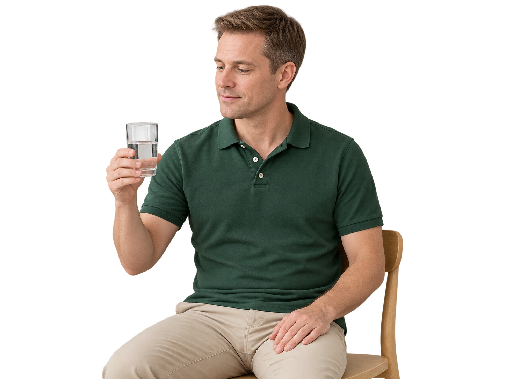

Therapie für Erwachsene
Sprache stärken. Kommunikation ermöglichen.
Im Gespräch bleiben.
Lebensqualität stärken.
Wir begleiten Erwachsene bei Sprach-, Sprech-, Stimm- und Schluckstörungen. Mit einer persönlichen und wertschätzenden Betreuung unterstützen wir Sie auf Ihrem individuellen Weg. Hier erfahren Sie mehr über unsere Behandlungsfelder.
Aphasie
Bedingt durch eine Schädigung des Gehirns kommt es bei der Aphasie zu Störungen der Sprache. Es können die Bereiche Verstehen, Sprechen, Lesen und/oder Schreiben betroffen sein. Oftmals tauchen Störungen in mehreren der eben genannten Bereiche auf.
Das Ausmaß der Störung kann stark variieren. Für eine optimale Behandlung ist eine Sprachtherapie schon in der akuten Erkrankungsphase erforderlich.
Dysarthrophonie / Dysarthrie
Durch eine Störung des zentralen Nervensystems, z. B. bei Morbus Parkinson, oder des peripheren Nervensystems, z. B. periphere Gesichtslähmung, kommt es zu Schwierigkeiten in der Steuerung und Ausführung von Sprechbewegungen.
Einschränkungen bestehen auch in der Atemnutzung und der Stimmgebung. Betroffene werden häufig schlechter verstanden. Ihre Sprache klingt undeutlich, sie lassen Laute, Silben oder Wortteile aus.
Sprechapraxie
Die Sprechapraxie, ebenfalls bedingt durch Schädigungen im Gehirn, führt zu Störungen der Planung von Sprechbewegungen. Häufig sind die Bildung gewisser Laute, Silben und Wortanfänge betroffen.
Die Koordination von Artikulation und Stimmgebung wird beeinträchtigt. Menschen mit Sprechapraxie klingen unter Umständen monoton oder ihr Betonungsmuster ist nicht korrekt.

Dysphagie
Bedingt werden Schluckstörungen, fachmännisch Dysphagie genannt, häufig durch neurologische Ausfälle im Gehirn, z. B. durch einen Schlaganfall. Auch Tumore im Kopf- und im Halsbereich können hierbei auslösend sein. Teilweise geht die Dysphagie mit einer Gesichtslähmung einher.
Betroffene verschlucken sich stark an Flüssigkeiten und/oder an Nahrung. Häufig fließen auch nach dem Schlucken noch Flüssigkeits- oder Nahrungsreste vom Rachen in Richtung Luftröhre.
Gelangt etwas davon in die Luftröhre, können Lungenentzündungen verursacht werden. Die Behandlung ist daher notwendig.
Facialislähmung
Die Facialislähmung, bekannt unter dem Begriff Gesichtslähmung, wird unterschieden in eine sogenannte periphere und zentrale Facialislähmung.
Bei der peripheren Facialislähmung ist es dem Betroffenen nicht möglich, die Stirn zu runzeln oder das Augenlid auf der gelähmten Seite zu schließen. In der zentralen Facialislähmung sind diese Bewegungen allerdings möglich.
Ein hängender Mundwinkel erscheint allerdings in beiden Formen. Gefühls- und Geschmacksstörungen können ebenfalls auftauchen.
Dysphonie
Stimmstörungen, genannt Dysphonien, können organisch oder funktionell bedingt auftauchen. Betroffene klagen z. B. über eine länger andauernde Heiserkeit, eine weniger belastbare Stimme, ein Kratzen oder über Schmerzen beim Sprechen. Auch ein Druck- oder Fremdkörpergefühl kann damit einhergehen.
Die organische Dysphonie wird durch pathologisch-anatomische Veränderungen, wie z. B. Tumore, Knoten etc. verursacht. Funktionelle Dysphonien besitzen keine organische Ursache, wobei hier die Stimmlippenbewegungen gestört ablaufen.
Gemeinsam den nächsten Schritt gehen.
Sie möchten einen Termin vereinbaren oder haben Fragen zur logopädischen Behandlung? Wir nehmen uns Zeit für Ihr Anliegen und besprechen gemeinsam, wie wir Sie unterstützen können.